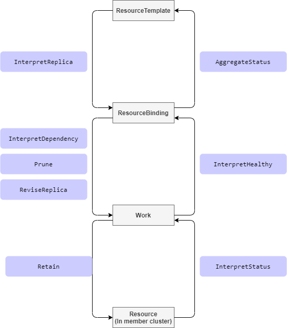

Resource Interpreter Webhook
Summary
In the progress of a resource(as known as resource template) propagating to cluster, Karmada take actions according to
the resource definition. For example, at the phase of building ResourceBinding, the karmada-controller will parse
the replicas from resource templates like deployments but do nothing for resources that don't have replicas.
For the Kubernetes native resources, Karmada knows how to parse them. But for custom resource type, as lack of the knowledge of the structure, Karmada treat the custom resource type as a general resource.
This proposal aims to provide a solution for users to teach Karmada to learn their custom resources.
Motivation
Nowadays, lots of people or projects extend Kubernetes by Custom Resource Defination. In order to propagate the
custom resources, Karmada has to learn the structure of the custom resource.
Goals
- Provide a solution to support custom resources by teaching Karmada the resource structure.
Non-Goals
Proposal
User Stories
As a user, I want to propagate my custom resource(workload type with replicas) to leverage the Karmada replica scheduling capabilities.
I have a custom resource which extremely similar with deployments, it has a replica field as well, I want to divide
the replicas to multiple clusters by declaring a ReplicaScheduling rule.
Without this framework, as lack of knowledge of the custom resource, Karmada can't grab it's
replica.
As a user, I want to customize the retain method for my CRD resources.
I have a custom resource which reconciling by a controller running in member clusters. The controllers would make changes to the resource(such as update some fields in .spec), I wish Karmada could retain the changes made by my controller.
Without this framework, as lack of knowledge of the custom resource, Karmada might can't retain the custom resource correctly. Thus, the resource might be changed back and forth by Karmada and it's controller.
Notes/Constraints/Caveats (Optional)
Risks and Mitigations
Design Details
Inspire of the Kubernetes Admission webhook, we propose a webhook called ResourceInterpreterWebhook which contains:
- A configuration API ResourceInterpreterWebhookConfiguration to declare the enabled webhooks.
- A message API ResourceInterpreterContext to declare the request and response between Karmada and webhooks.
In the ResourceInterpreterWebhookConfiguration API, the InterpreterOperation represents the request that Karmada
might call the webhooks in the whole propagating process.

New ResourceInterpreterWebhookConfiguration API
We propose a new CR in config.karmada.io group.
// ResourceInterpreterWebhookConfiguration describes the configuration of webhooks which take the responsibility to
// tell karmada the details of the resource object, especially for custom resources.
type ResourceInterpreterWebhookConfiguration struct {
metav1.TypeMeta `json:",inline"`
metav1.ObjectMeta `json:"metadata,omitempty"`
// Webhooks is a list of webhooks and the affected resources and operations.
// +required
Webhooks []ResourceInterpreterWebhook `json:"webhooks"`
}
// ResourceInterpreterWebhook describes the webhook as well as the resources and operations it applies to.
type ResourceInterpreterWebhook struct {
// Name is the full-qualified name of the webhook.
// +required
Name string `json:"name"`
// ClientConfig defines how to communicate with the hook.
// +required
ClientConfig admissionregistrationv1.WebhookClientConfig `json:"clientConfig"`
// Rules describes what operations on what resources the webhook cares about.
// The webhook cares about an operation if it matches any Rule.
// +optional
Rules []RuleWithOperations `json:"rules,omitempty"`
// TimeoutSeconds specifies the timeout for this webhook. After the timeout passes,
// the webhook call will be ignored or the API call will fail based on the
// failure policy.
// The timeout value must be between 1 and 30 seconds.
// Default to 10 seconds.
// +optional
TimeoutSeconds *int32 `json:"timeoutSeconds,omitempty"`
// InterpreterContextVersions is an ordered list of preferred `ResourceInterpreterContext`
// versions the Webhook expects. Karmada will try to use first version in
// the list which it supports. If none of the versions specified in this list
// supported by Karmada, validation will fail for this object.
// If a persisted webhook configuration specifies allowed versions and does not
// include any versions known to the Karmada, calls to the webhook will fail
// and be subject to the failure policy.
InterpreterContextVersions []string `json:"interpreterContextVersions"`
}
// RuleWithOperations is a tuple of Operations and Resources. It is recommended to make
// sure that all the tuple expansions are valid.
type RuleWithOperations struct {
// Operations is the operations the hook cares about.
// If '*' is present, the length of the slice must be one.
// +required
Operations []InterpreterOperation `json:"operations"`
// Rule is embedded, it describes other criteria of the rule, like
// APIGroups, APIVersions, Kinds, etc.
Rule `json:",inline"`
}
// InterpreterOperation specifies an operation for a request.
type InterpreterOperation string
const (
// InterpreterOperationAll indicates math all InterpreterOperation.
InterpreterOperationAll InterpreterOperation = "*"
// InterpreterOperationInterpretReplica indicates that karmada want to figure out the replica declaration of a specific object.
// Only necessary for those resource types that have replica declaration, like Deployment or similar custom resources.
InterpreterOperationInterpretReplica InterpreterOperation = "InterpretReplica"
// InterpreterOperationReviseReplica indicates that karmada request webhook to modify the replica.
InterpreterOperationReviseReplica InterpreterOperation = "ReviseReplica"
// InterpreterOperationInterpretStatus indicates that karmada want to figure out how to get the status.
// Only necessary for those resource types that define their status in a special path(not '.status').
InterpreterOperationInterpretStatus InterpreterOperation = "InterpretStatus"
// InterpreterOperationPrune indicates that karmada want to figure out how to package resource template to Work.
InterpreterOperationPrune InterpreterOperation = "Prune"
// InterpreterOperationRetain indicates that karmada request webhook to retain the desired resource template.
// Only necessary for those resources which specification will be updated by their controllers running in member cluster.
InterpreterOperationRetain InterpreterOperation = "Retain"
// InterpreterOperationAggregateStatus indicates that karmada want to figure out how to aggregate status to resource template.
// Only necessary for those resource types that want to aggregate status to resource template.
InterpreterOperationAggregateStatus InterpreterOperation = "AggregateStatus"
// InterpreterOperationInterpretHealthy indicates that karmada want to figure out the healthy status of a specific object.
// Only necessary for those resource types that have and want to reflect their healthy status.
InterpreterOperationInterpretHealthy InterpreterOperation = "InterpretHealthy"
// InterpreterOperationInterpretDependency indicates that karmada want to figure out the dependencies of a specific object.
// Only necessary for those resource types that have dependencies resources and expect the dependencies be propagated
// together, like Deployment depends on ConfigMap/Secret.
InterpreterOperationInterpretDependency InterpreterOperation = "InterpretDependency"
)
// Rule is a tuple of APIGroups, APIVersion, and Kinds.
type Rule struct {
// APIGroups is the API groups the resources belong to. '*' is all groups.
// If '*' is present, the length of the slice must be one.
// For example:
// ["apps", "batch", "example.io"] means matches 3 groups.
// ["*"] means matches all group
//
// Note: The group cloud be empty, e.g the 'core' group of kubernetes, in that case use [""].
// +required
APIGroups []string `json:"apiGroups"`
// APIVersions is the API versions the resources belong to. '*' is all versions.
// If '*' is present, the length of the slice must be one.
// For example:
// ["v1alpha1", "v1beta1"] means matches 2 versions.
// ["*"] means matches all versions.
// +required
APIVersions []string `json:"apiVersions"`
// Kinds is a list of resources this rule applies to.
// If '*' is present, the length of the slice must be one.
// For example:
// ["Deployment", "Pod"] means matches Deployment and Pod.
// ["*"] means apply to all resources.
// +required
Kinds []string `json:"kinds"`
}
New ResourceInterpreterContext API
// ResourceInterpreterContext describes an interpreter context request and response.
type ResourceInterpreterContext struct {
metav1.TypeMeta `json:",inline"`
// Request describes the attributes for the interpreter request.
// +optional
Request *ResourceInterpreterRequest `json:"request,omitempty"`
// Response describes the attributes for the interpreter response.
// +optional
Response *ResourceInterpreterResponse `json:"response,omitempty"`
}
// ResourceInterpreterRequest describes the interpreter.Attributes for the interpreter request.
type ResourceInterpreterRequest struct {
// UID is an identifier for the individual request/response.
// The UID is meant to track the round trip (request/response) between the karmada and the WebHook, not the user request.
// It is suitable for correlating log entries between the webhook and karmada, for either auditing or debugging.
// +required
UID types.UID `json:"uid"`
// Kind is the fully-qualified type of object being submitted (for example, v1.Pod or autoscaling.v1.Scale)
// +required
Kind metav1.GroupVersionKind `json:"kind"`
// Name is the name of the object as presented in the request.
// +required
Name string `json:"name"`
// Namespace is the namespace associated with the request (if any).
// +optional
Namespace string `json:"namespace,omitempty"`
// Operation is the operation being performed.
// +required
Operation InterpreterOperation `json:"operation"`
// Object is the object from the incoming request.
// +optional
Object runtime.RawExtension `json:"object,omitempty"`
// ObservedObject is the object observed from the kube-apiserver of member clusters.
// Not nil only when InterpreterOperation is InterpreterOperationRetain.
// +optional
ObservedObject *runtime.RawExtension `json:"observedObject,omitempty"`
// DesiredReplicas represents the desired pods number which webhook should revise with.
// It'll be set only if InterpreterOperation is InterpreterOperationReviseReplica.
// +optional
DesiredReplicas *int32 `json:"replicas,omitempty"`
// AggregatedStatus represents status list of the resource running in each member cluster.
// +optional
AggregatedStatus []workv1alpha1.AggregatedStatusItem `json:"aggregatedStatus,omitempty"`
}
// ResourceInterpreterResponse describes an interpreter response.
type ResourceInterpreterResponse struct {
// UID is an identifier for the individual request/response.
// This must be copied over from the corresponding ResourceInterpreterRequest.
// +required
UID types.UID `json:"uid"`
// Successful indicates whether the request be processed successfully.
// +required
Successful bool `json:"successful"`
// Status contains extra details information about why the request not successful.
// This filed is not consulted in any way if "Successful" is "true".
// +optional
Status *RequestStatus `json:"status,omitempty"`
// The patch body. We only support "JSONPatch" currently which implements RFC 6902.
// +optional
Patch []byte `json:"patch,omitempty"`
// The type of Patch. We only allow "JSONPatch" currently.
// +optional
PatchType *PatchType `json:"patchType,omitempty" protobuf:"bytes,5,opt,name=patchType"`
// ReplicaRequirements represents the requirements required by each replica.
// Required if InterpreterOperation is InterpreterOperationInterpretReplica.
// +optional
ReplicaRequirements *workv1alpha2.ReplicaRequirements `json:"replicaRequirements,omitempty"`
// Replicas represents the number of desired pods. This is a pointer to distinguish between explicit
// zero and not specified.
// Required if InterpreterOperation is InterpreterOperationInterpretReplica.
// +optional
Replicas *int32 `json:"replicas,omitempty"`
// Dependencies represents the reference of dependencies object.
// Required if InterpreterOperation is InterpreterOperationInterpretDependency.
// +optional
Dependencies []DependentObjectReference `json:"dependencies,omitempty"`
// RawStatus represents the referencing object's status.
// +optional
RawStatus *runtime.RawExtension `json:"rawStatus,omitempty"`
// Healthy represents the referencing object's healthy status.
// +optional
Healthy *bool `json:"healthy,omitempty"`
}
// RequestStatus holds the status of a request.
type RequestStatus struct {
// Message is human-readable description of the status of this operation.
// +optional
Message string `json:"message,omitempty"`
// Code is the HTTP return code of this status.
// +optional
Code int32 `json:"code,omitempty"`
}
// PatchType is the type of patch being used to represent the mutated object
type PatchType string
const (
// PatchTypeJSONPatch represents the JSONType.
PatchTypeJSONPatch PatchType = "JSONPatch"
)
// DependentObjectReference contains enough information to locate the referenced object inside current cluster.
type DependentObjectReference struct {
// APIVersion represents the API version of the referent.
// +required
APIVersion string `json:"apiVersion"`
// Kind represents the Kind of the referent.
// +required
Kind string `json:"kind"`
// Namespace represents the namespace for the referent.
// For non-namespace scoped resources(e.g. 'ClusterRole')，do not need specify Namespace,
// and for namespace scoped resources, Namespace is required.
// If Namespace is not specified, means the resource is non-namespace scoped.
// +optional
Namespace string `json:"namespace,omitempty"`
// Name represents the name of the referent.
// +required
Name string `json:"name"`
}
Example
Configuration
The example below show two webhooks configuration.
The foo.example.com webhook serves for foos under foo.example.com group and implemented Retain and
InterpretHealthy operations.
The bar.example.com webhook serves for bars under bar.example.com group and implemented InterpretDependency and
InterpretHealthy operations.
apiVersion: config.karmada.io/v1alpha1
kind: ResourceInterpreterWebhookConfiguration
metadata:
name: example
webhooks:
- name: foo.example.com
rules:
- operations: ["Retain", "InterpretHealthy"]
apiGroups: ["foo.example.com"]
apiVersions: ["*"]
kinds: ["Foo"]
scope: "Namespaced"
clientConfig:
url: https://xxx:443/explore-foo
caBundle: {{caBundle}}
exploreReviewVersions: ["v1alpha1"]
timeoutSeconds: 3
- name: bar.example.com
rules:
- operations: ["InterpretDependency", "InterpretHealthy"]
apiGroups: ["bar.example.com"]
apiVersions: ["*"]
kinds: ["Bar"]
scope: "Cluster"
clientConfig:
url: https://xxx:443/explore-bar
caBundle: {{caBundle}}
exploreReviewVersions: ["v1alpha1"]
timeoutSeconds: 3
Request and Response
Take InterpretHealthy for example, Karmada will send the request like:
apiVersion: config.karmada.io/v1alpha1
kind: ResourceInterpreterContext
request:
- uid: xxx
- Kind:
- group: foo.example.com
version: v1alpha1
Kind: Foo
- name: foo
- namespace: default
- operation: InterpretHealthy
- object: <raw data of the object>
And the response like:
apiVersion: config.karmada.io/v1alpha1
kind: ResourceInterpreterContext
response:
- uid: xxx(same uid in the request)
- healthy: true
Test Plan
- Propose E2E test cases according the operations described above.
Alternatives
The proposal Configurable Local Value Retention described a solution to retain custom resource, but the configuration would be a little complex to users.